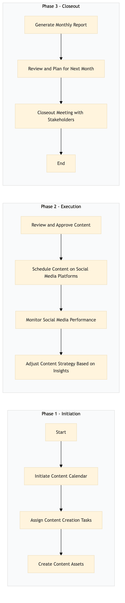

| Role | Steps |
|---|---|
| Marketing Manager | 1.1 1.2 1.4 2.3 3.1 3.2 3.3 |
| Content Creator | 1.3 |
| Social Media Manager | 1.4 2.1 2.2 3.1 |
| Step | Name | Role | System | Input | Output | KPI | Dec? | Exc? | Pain Point / Risk |
|---|---|---|---|---|---|---|---|---|---|
| 1.1 | Initiate Content Calendar | Marketing Manager | Oracle OPERA Cloud, Microsoft Power BI | Monthly review meeting notes, marketing objectives | Content calendar for the month | Less than 1 hour | N | Y | Aligning content with hotel events and promotions |
| 1.2 | Assign Content Creation Tasks | Marketing Manager | Microsoft Power BI, Salesforce | Content calendar | Task assignments to content creators | Less than 30 minutes | N | Y | Balancing workload among content creators |
| 1.3 | Create Content Assets | Content Creator | Adobe Creative Suite, Microsoft Power BI | Task assignments | High-quality images and videos | Less than 2 hours per asset | Y | N | Ensuring content aligns with brand guidelines |
| 1.4 | Review and Approve Content | Marketing Manager, Brand Manager | Microsoft Power BI, Salesforce | Content assets | Approved content for publishing | Less than 30 minutes per asset | Y | N | Maintaining consistent brand voice and quality |
| 2.1 | Schedule Content on Social Media Platforms | Social Media Manager | Hootsuite, Oracle OPERA Cloud | Approved content | Scheduled posts across social media platforms | Less than 1 hour per platform | N | Y | Optimizing posting times for maximum engagement |
| 2.2 | Monitor Social Media Performance | Social Media Manager | Hootsuite, Oracle OPERA Cloud, Microsoft Power BI | Scheduled posts | Performance metrics and insights | Less than 30 minutes per day | Y | N | Analyzing large volumes of data for actionable insights |
| 2.3 | Adjust Content Strategy Based on Insights | Marketing Manager, Social Media Manager | Microsoft Power BI, Salesforce | Performance metrics and insights | Updated content strategy | Less than 1 hour | Y | N | Adapting quickly to changing trends and audience preferences |
| 3.1 | Generate Monthly Report | Marketing Manager, Social Media Manager | Microsoft Power BI, Salesforce | Performance metrics and insights | Monthly social media performance report | Less than 2 hours | N | Y | Summarizing complex data into clear actionable reports |
| 3.2 | Review and Plan for Next Month | Marketing Manager, Social Media Manager | Microsoft Power BI, Salesforce | Monthly report | Action plan for the next month | Less than 1 hour | Y | N | Prioritizing initiatives based on performance and business goals |
| 3.3 | Closeout Meeting with Stakeholders | Marketing Manager, Social Media Manager, Brand Manager | Microsoft Teams, Oracle OPERA Cloud | Action plan for the next month | Meeting minutes and next steps | Less than 1 hour | N | Y | Ensuring all stakeholders are aligned on goals and responsibilities |
This process outlines the management of social media content at a Marriott full-service hotel to enhance brand presence and drive guest engagement.